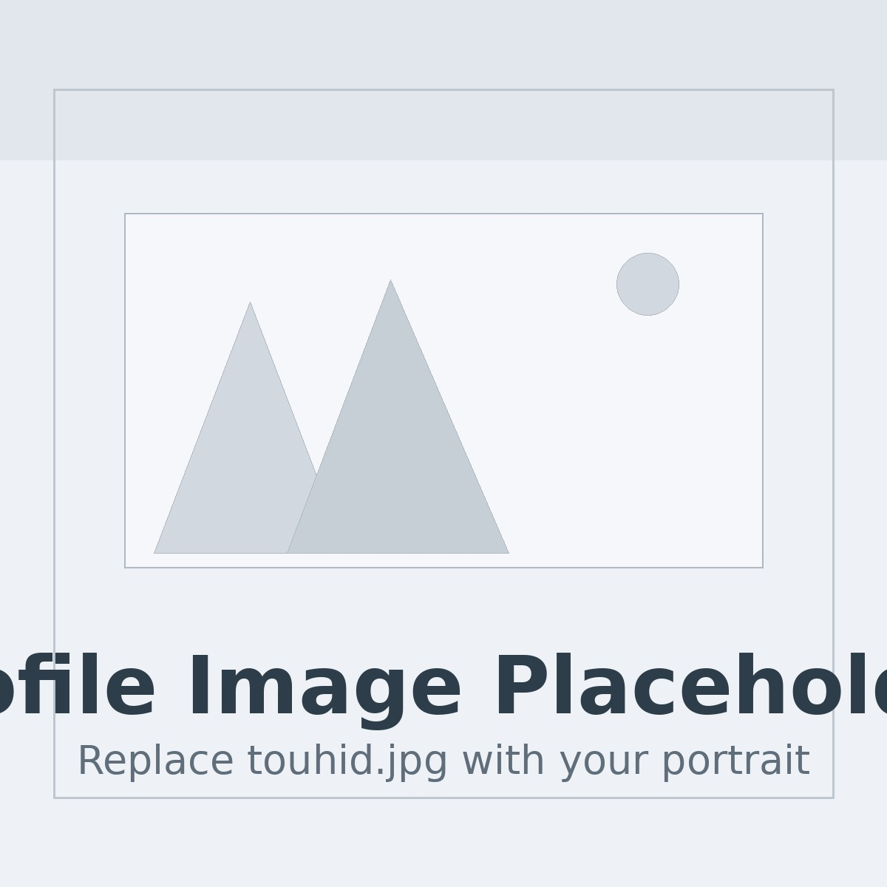
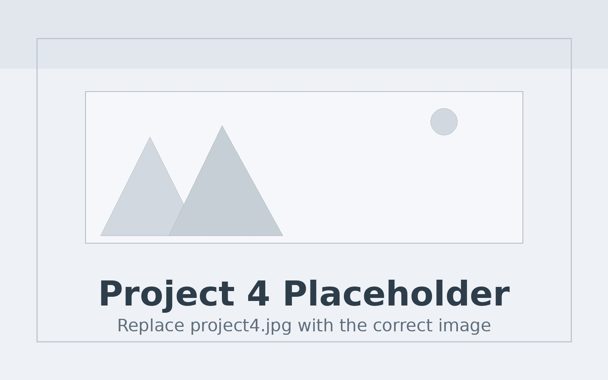

Accessibility · HCI · Applied AI
Designing intelligent systems that make digital experiences more usable.
I am a fourth-year Ph.D. candidate in Informatics at Penn State. My work sits at the intersection of accessibility, multimodal AI, and human-centered system design.

About Me
I am a fourth-year Ph.D. candidate in Informatics at Penn State University's College of Information Sciences and Technology (IST). I am working under the supervision of Dr. Syed Billah at the a11y lab. I hold a Bachelor’s degree in Computer Science and Engineering from the Bangladesh University of Engineering and Technology (2017) and a Master’s in Informatics from Penn State (2024).
My current research focuses on enhancing user experience through agentic, mostly automated workflows powered by large multi-modal models (LMMs) and retrieval-augmented generation (RAG) tools. These workflows aim to reduce the cognitive and physical demands of digital interaction by enabling intelligent agents to perceive, reason, and act on behalf of users, helping them complete complex tasks more easily and intuitively.
This direction builds upon my early Ph.D. work addressing system- and application-level UX challenges in desktop and mobile platforms. I developed a probabilistic model to capture perceived accessibility in non-visual interactions and introduced three actionable metrics to help developers improve desktop usability. I also designed a custom three-wheeled input device that allowed blind users to navigate UI menus more efficiently, and a screen-space compactor to help low-vision users interact with dense visual layouts. Both tools were grounded in participatory design and evaluated through empirical studies. My first-author research publications have been accepted at top-tier HCI conferences, including CHI, IMWUT, DIS, ASSETS, and UIST, with a Best Paper Honorable Mention at UIST 2024.
My later projects have focused on bridging human-centered design with advances in AI. I created an interactive visualization tool for evaluating the reliability of vision-language models without ground truth, introduced a novel temporal consistency metric for video object recognition models, and developed an accessibility API for 3D/VR environments, along with a reference implementation for the Unity platform.
Together, these efforts reflect a broader research agenda: to design intelligent systems that respond to the diverse ways people interact with technology. By embedding inclusive design principles at the core of AI-powered interfaces, my work reimagines how digital systems can become more capable and meaningfully more usable for everyone.
Selected Work
Portfolio
A curated set of projects, papers, and research directions. Each card includes a placeholder image so you can later swap in the right visual.
